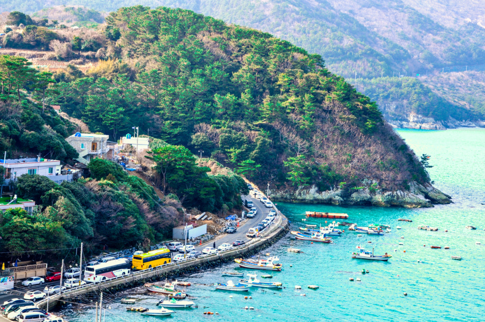

Celebrities of South Korea

Park Jae-sang, known professionally as Psy, is a South Korean singer, rapper, songwriter, and record producer.

Jun Ji-hyun, also known by her English name Gianna Jun, is a South Korean actress.

Park Shin-hye is a South Korean actress and singer.
Lim Yo-hwan, known as `BoxeR`, is a former professional player of the real-time strategy computer game StarCraft.
Cities of South Korea
Geoje
More of an island than a city, Geoje has nicknamed itself the ‘Blue City.’ It is surrounded by sparkling clear waters, a gorgeous rocky coastline, and lots of beautiful beaches.

Daegu
Home to a sizeable student population, Daegu has a youthful feel to it and is surprisingly friendly and welcoming, considering that it is the fourth largest city in the country.
Jeonju
Once the spiritual capital of the country, Jeonju is full of historical sites and cultural landmarks. It is also home to one of the nation’s most popular tourist attractions in the shape of Hanok Village, which showcases traditional houses, local cultural practices, and artisanal products from around the region.
Jeju City
The largest city on the island of the same name, Jeju’s warm, welcoming climate makes it a popular tourist destination. Many people head here during the summer to enjoy the fancy hotels, teeming casinos, and trendy bars.

Busan
The second largest city in South Korea, Busan is home to a bustling port and is a popular tourist destination, thanks to its beautiful scenery made up of forest-coated mountains and gorgeous beaches.

Seoul
A sprawling metropolis that encompasses over 25 million people, South Korea’s capital has everything imaginable on offer. It is an enthralling place to explore, with centuries-old palaces and temples rubbing shoulders with gleaming shopping malls and bustling night markets.
Landmarks of South Korea

GYEONGJU
The former capital of the Silla Kingdom.

SEONAMSA
A beautiful mountain temple with some 20 historical buildings.

BUSEOKSA TEMPLE
This temple contains valuable treasures including the second oldest wooden
structure in South Korea – Muryangsujeon – that was reconstructed in 1376 AD.